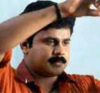
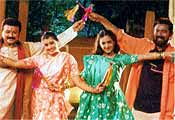

It’s festival time again for
Malayalam cinema. After the harvest festival of Onam, it
is the Christmas season that Malayalam mainstream cinema
eagerly waits for. The festive-cum-holiday mood would prove
really beneficial to those having their films released during
this season and hence there is always about half-a-dozen
films that are released during this season and some of these
really make it big at the box-office.
One of last years Christmas releases, Thenkaasipattanam
turned out to be one of the biggest events ever at the box-office
in Kerala. This time too there are a few films, two of them
super-star ones that are getting ready for Christmas release.
And there is, indeed, all the possibility of a battle of
the stars at the box-office. Almost every one of the leading
Malayalam stars except perhaps Suresh Gopi and Kunchacko
Boban are likely to have releases this Christmas. Among
them, there are the super stars Mammootty and Mohanlal,
there is the young star Dileep, who is perhaps everyone’s
favourite presently, there is Jayaram, who has his own sway
upon the box-office and there is Lal too who is very much
popular these days. As for directors, there is the all-time
hitmaker Joshi, who had delivered some of the biggest hits
in Malayalam like New Delhi, Nair Saab and Nirakkoottu to
name a few, there is the internationally-acclaimed TV Chandran,
there is scenarist-turned-director Lohitadas, whose films,
though not pertaining to any trend have almost always proved
to have an enormous appeal at the box-office, and there
is newcomer Shafi and the one-film old Rajesh Narayanan,
who are getting ready to try their luck. The Mohanlal-starrer
Praja, directed by hitmaker Joshi and produced jointly by
Joshi and Renji Panicker, is anticipated to be the biggest
crowd-puller this Christmas.
 Praja
tells the story of Zakir Ali Hussain, an underworld man,
who tries his best to make a return to the mainstream of
life under not so favourable conditions. The story of Zakir
Ali Hussain, who is a man with a great amount of experience,
is told with the present socio-political atmosphere as the
backdrop. As Zakir Ali Husain, Mohanlal is likely to give
a performance that would appeal very much to his innummerable
fans and the masses. And giving support to Mohanlal as the
female lead is Aiswarya, who had starred along with the
superstar in the super-hit Narasimham. Also in the cast
are Babu Namboothiri, Manoj K Jayan, Biju Menon, Cochin
Haneefa, Vijayakumar and NF Verghese.
Praja
tells the story of Zakir Ali Hussain, an underworld man,
who tries his best to make a return to the mainstream of
life under not so favourable conditions. The story of Zakir
Ali Hussain, who is a man with a great amount of experience,
is told with the present socio-political atmosphere as the
backdrop. As Zakir Ali Husain, Mohanlal is likely to give
a performance that would appeal very much to his innummerable
fans and the masses. And giving support to Mohanlal as the
female lead is Aiswarya, who had starred along with the
superstar in the super-hit Narasimham. Also in the cast
are Babu Namboothiri, Manoj K Jayan, Biju Menon, Cochin
Haneefa, Vijayakumar and NF Verghese.
 Mammootty,
another superstar of Malayalam cinema, who is also a nationally
and internationally acknowledged star, is having an offbeat
film this Christmas. Dani is made by none other than the
nationally and internationally acclaimed TV Chandran, who
had made films like Ponthan Maada, Ormakal Undaayirikkanam,
Mankamma and Susanna. Dani is a film upon which both Chandran
and Mammootty hold much hope. It is about Daniel Thomson,
a saxophone player who is a mute witness to many of the
historical happenings taking place around in the world.
The film traces the life of this character upto his seventy
third year and comments upon many things that may have social
and political relevance. Also starring in the film are Vani
Viswanath, Siddique, Ratheesh, Maya Moushmi and Raji Menon.
Another main attraction of the film is that noted danseuse
Mallika Sarabhai plays a pivotal role. Being off-beat, Dani
may not be a very big attraction at the box-office, but
it is sure to stand aloof from the common stock of films
and like every other TV Chandran film, would not be a failure.
Moreover Dani could win rave reviews, awards and many other
recognitions. Lohitadas has been one of the most reputed
and sought after scenarists of Malayalam cinema and had
done the script of many films that are cherished in the
heart by film lovers all over Kerala.
Mammootty,
another superstar of Malayalam cinema, who is also a nationally
and internationally acknowledged star, is having an offbeat
film this Christmas. Dani is made by none other than the
nationally and internationally acclaimed TV Chandran, who
had made films like Ponthan Maada, Ormakal Undaayirikkanam,
Mankamma and Susanna. Dani is a film upon which both Chandran
and Mammootty hold much hope. It is about Daniel Thomson,
a saxophone player who is a mute witness to many of the
historical happenings taking place around in the world.
The film traces the life of this character upto his seventy
third year and comments upon many things that may have social
and political relevance. Also starring in the film are Vani
Viswanath, Siddique, Ratheesh, Maya Moushmi and Raji Menon.
Another main attraction of the film is that noted danseuse
Mallika Sarabhai plays a pivotal role. Being off-beat, Dani
may not be a very big attraction at the box-office, but
it is sure to stand aloof from the common stock of films
and like every other TV Chandran film, would not be a failure.
Moreover Dani could win rave reviews, awards and many other
recognitions. Lohitadas has been one of the most reputed
and sought after scenarists of Malayalam cinema and had
done the script of many films that are cherished in the
heart by film lovers all over Kerala.

And
when Lohi turned to direction with Bhoothakannadi, he amazed
everyone with his deft handling of the almost different
subject. And his consequent films as a director including
Karunyam, Kanmadam, Arayanangalude Veedu, Joker, Arayannangalude
Veedu and Joker have all been really enjoyable films that
have been given a really warm welcome by the people. This
Christmas Lohitadas is releasing his latest film Sutradhaaran,
starring Dileep who plays the role of Rameshan, a youth
who sells pickles and papads for a living and practices
Homeopathy for a hobby. Rameshan, who reaches Pandavapuram
under certain circumstances, finds himself in love with
Shivani, a young girl who is in distress and who needs his
help. Also in the cast are Kalabhavan Mani, Cochin Haneefa,
Bindu Panicker and Salim Kumar. And in Sutradhaaran, Lohitadas
is introducing a new face as the female lead. Meera Jasmine,
a total newcomer makes her entry playing the role of Shivani.

Shafi,
the younger brother of Rafi of the Rafi-Mecartin director
duo, is to make his entry as an independent director this
Christmas with One-Man Show, starring in the lead Jayaram
and Samyuktha Verma. The film, scripted by Rafi and Mecartin,
is a full-length comedy and is told with the legal profession
as the backdrop. Jayaram and Samyuktha, who are teaming
up again after Swayamvarapanthal, are accompanied in the
cast by Lal, Kalabhavan Mani, Narendra Prasad and Manya.
Being a festival season, a comedy film made on the lines
of the recent hits is very much likely to prove a tough
contender even to the super star films.
 One
film old Rajesh Narayanan, whose Punyam has been shot and
readied many months earlier, is planning to get it released
this Christmas. Based on a mythological story, the film
features in the cast Krishnakumar, Boban Alummooodan and
Lekshmi Gopalaswamy and is very much likely to be a new
and different experience for the viewers. There may, of
course, be doubts about the box-office potential of this
film, but judging from Ramesh Narayanan’s last film, it
is a matter of, no doubt, that Punyam would be a class apart
from many films made these days.
One
film old Rajesh Narayanan, whose Punyam has been shot and
readied many months earlier, is planning to get it released
this Christmas. Based on a mythological story, the film
features in the cast Krishnakumar, Boban Alummooodan and
Lekshmi Gopalaswamy and is very much likely to be a new
and different experience for the viewers. There may, of
course, be doubts about the box-office potential of this
film, but judging from Ramesh Narayanan’s last film, it
is a matter of, no doubt, that Punyam would be a class apart
from many films made these days.
After the Onam releases, Malayalam cinema has been passing
through a very lean phase and hence it is upon the Christmas
films that the industry pins all hope. And if some of these
Christmas films make it big, which is very much likely,
Malayalam Cinema has reasons to be happy in the New Year
and start anew with renewed vigour.
Reviews:
Praja
One
Man Show